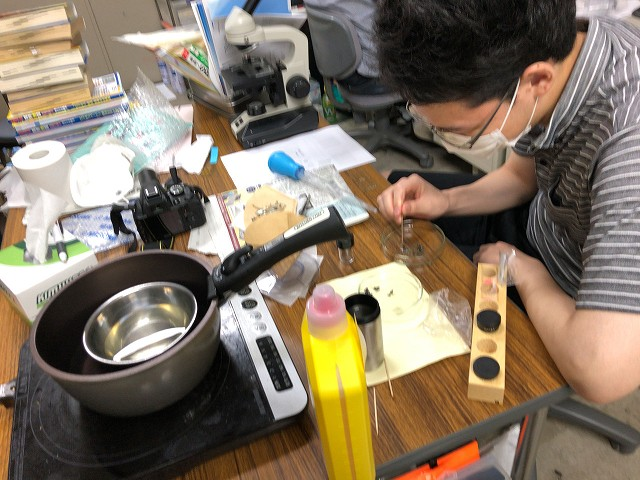

・ 煮干し (R02.06.16)
プランクトンの採取は現地採取や購入してきましたが、現地採取は労力と時間が大変だし、購入は生き物なので結構気を遣うことが多いです。そこで、煮干しの内蔵から抽出する方法に変更。

やり方はネットで観た
道具はミスミ
PC組み立て中
おやおや
困ったらフォロー
CPUファン組み付け中
おやおや
撮影
BACK
© Measurement System Laboratory, Kyoto Institute of Technology.